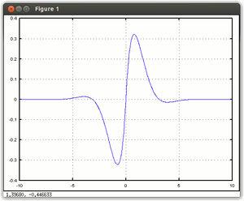
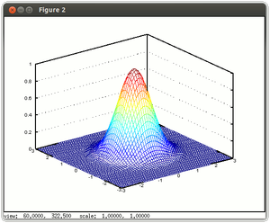
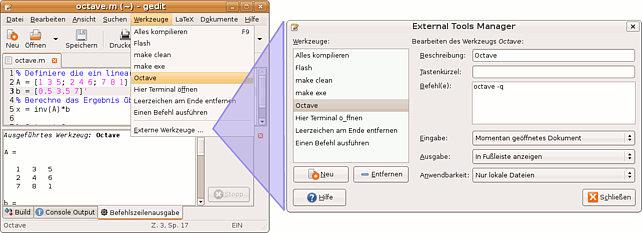

Octave
Dieser Artikel wurde für die folgenden Ubuntu-Versionen getestet:
Ubuntu 16.04 Xenial Xerus
Ubuntu 14.04 Trusty Tahr
Zum Verständnis dieses Artikels sind folgende Seiten hilfreich:
Verwenden eines PPAs, optional
Pakete aus dem Quellcode erstellen, optional
Archive entpacken, optional
GNU Octave  ist eine interaktive Skriptsprache zur Lösung von Problemstellungen aus dem Bereich der numerischen Mathematik. Die Syntax von Octave ist weitgehend mit der des bekannten proprietären Mathematikprogramms Matlab identisch. Octave kann auch komplexe Grafiken in 2D und 3D ausgeben. Zur grafischen Darstellung können verschiedene Funktionsplotter verwendet werden. Neuere Versionen bringen eine komplette Entwicklungsumgebung mit. Einsatzgebiete von Octave sind unter anderem:
ist eine interaktive Skriptsprache zur Lösung von Problemstellungen aus dem Bereich der numerischen Mathematik. Die Syntax von Octave ist weitgehend mit der des bekannten proprietären Mathematikprogramms Matlab identisch. Octave kann auch komplexe Grafiken in 2D und 3D ausgeben. Zur grafischen Darstellung können verschiedene Funktionsplotter verwendet werden. Neuere Versionen bringen eine komplette Entwicklungsumgebung mit. Einsatzgebiete von Octave sind unter anderem:
Allgemeine Berechnungen mit Vektoren und Matrizen
Matrixoperationen wie Indizierung und Slicing, Bildung der Inverse, Zerlegungen und Eigenwerte
Lösung linearer Gleichungssysteme
Entwicklung und Simulation von regelungstechnischen Systemen
Datenauswertung und Darstellung der Ergebnisse in Diagrammform
Installation¶
Octave wird in kleineren, zeitlich oft relativ dicht aufeinander folgenden Schritten entwickelt. Daher gibt es häufig neue Versionen, bei denen sich jedoch oft nur Kleinigkeiten ändern. Man hat also die Wahl, entweder die Version aus den offiziellen Paketquellen zu benutzen, eine Fremdquelle zu verwenden oder die neueste Version selbst zu kompilieren.
Offizielle Paketquellen¶
Um mit Octave arbeiten zu können, müssen folgende Pakete installiert [1] werden:
octave (universe)
octave-doc (universe, Dokumentation der Skriptsprache, liegt nach der Installation im Ordner /usr/share/doc/octave3.0-doc)
gnuplot (universe, Gnuplot für 2D- und 3D-Grafiken)
 mit apturl
mit apturl
Paketliste zum Kopieren:
sudo apt-get install octave octave-doc gnuplot
sudo aptitude install octave octave-doc gnuplot
PPA¶
Ein "Personal Package Archiv" (PPA) [2] enthält das aktuelle Octave (4.0.x). Es stellt Pakete für die LTS-Versionen von Ubuntu 14.04 und 16.04 zur Verfügung (Stand: Oktober 2016).
Adresszeile zum Hinzufügen des PPAs:
ppa:octave/stable
Hinweis!
Zusätzliche Fremdquellen können das System gefährden.
Ein PPA unterstützt nicht zwangsläufig alle Ubuntu-Versionen. Weitere Informationen sind der  PPA-Beschreibung des Eigentümers/Teams octave zu entnehmen.
PPA-Beschreibung des Eigentümers/Teams octave zu entnehmen.
Damit Pakete aus dem PPA genutzt werden können, müssen die Paketquellen neu eingelesen werden.
Nach der Aktualisierung der Paketquellen können die folgenden Pakete installiert werden:
octave (ppa)
octave-doc (ppa, optional, PDF-Dokumentation der Skriptsprache)
octave-htmldoc (ppa, optional, HTML-Dokumentation der Skriptsprache)
mit apturl
Paketliste zum Kopieren:
sudo apt-get install octave octave-doc octave-htmldoc
sudo aptitude install octave octave-doc octave-htmldoc
Octave selbst kompilieren¶
Wer die allerneueste Version von GNU Octave benutzen möchte, kann das Programm selbst kompilieren [3]. Dazu müssen zunächst einige Pakete installiert werden:
libqhull-dev (universe)
libginac-dev (universe)
libhdf5-serial-dev (universe)
libfftw3-dev
gfortran
libumfpack5.4.0 (universe)
libreadline6-dev
mit apturl
Paketliste zum Kopieren:
sudo apt-get install libqhull-dev libginac-dev libhdf5-serial-dev libfftw3-dev gfortran libumfpack5.4.0 libreadline6-dev
sudo aptitude install libqhull-dev libginac-dev libhdf5-serial-dev libfftw3-dev gfortran libumfpack5.4.0 libreadline6-dev
Jetzt lädt man das Paket der neuesten (stabilen) Version von der Download-Seite  herunter und entpackt [4] die Dateien ins Homeverzeichnis. Anschließend kann Octave kompiliert werden.
herunter und entpackt [4] die Dateien ins Homeverzeichnis. Anschließend kann Octave kompiliert werden.
Benutzung¶
Octave wird standardmäßig über die Kommandozeile [5] ausgeführt, wo die entsprechenden Befehle direkt eingegeben werden. Nach einem Druck auf ⏎ wird die soeben eingegebene Zeile sofort interaktiv verarbeitet und evtl. eine Ausgabe erzeugt. Es gibt jedoch auch die Möglichkeit, Octave über eine grafische Oberfläche zu verwenden. Diese bietet noch einige Zusatzfunktionen.
Interaktiver Text-Modus¶
Das installierte Programm wird im Terminal mit dem Befehl octave gestartet. Bei der Arbeit in diesem interaktiven Modus wird jeder Befehl einzeln eingegeben und das Ergebnis wird sofort angezeigt.
In folgendem einfachen Beispielaufruf wird eine Matrix und ein Vektor definiert und anschließend eine Multiplikation durchgeführt:
octave:1> A = [1 3 5; 2 4 6; 7 8 1]; octave:2> b = [0.5; 3.5; 7]; octave:3> c = A*b c = 46.000 57.000 38.500
Die genaue Anweisungs-Syntax und viele hilfreiche Berechnungsbeispiele finden sich in den Links. Aufgrund der hohen Kompatibilität kann aber auch jedes MATLAB Buch hilfreich sein.
Erstellung und Aufruf von Skripten¶
Bei größeren Berechnungen ist es meist sinnvoller, die Befehle in einer Textdatei abzuspeichern, anstatt alles manuell einzugeben. Diese Skripte haben sowohl unter Matlab als auch bei Octave die Endung .m und können direkt aus dem interaktiven Modus von Octave oder z.B. mit einem Editor aufgerufen werden.
Dazu muss Octave allerdings im Verzeichnis des Skripts gestartet sein, oder das Arbeitsverzeichnis von Octave manuell mit dem Befehl cd ORDNER verändert werden. Zum Aufruf gibt man nur den Namen des Skripts ohne Endung ein. In diesem Beispiel wird Berechnung.m im Unterordner Skripte aufgerufen:
octave:1> cd Skripte octave:2> Berechnung
Funktionen, die in einem Skript des Arbeitsverzeichnisses definiert sind, stehen darüber hinaus automatisch zur Verfügung und müssen nicht gesondert geladen werden.
Für den einmaligen Aufruf eines Skripts aus dem Terminal kann Octave der Dateiname auch direkt als Startparameter übergeben werden:
octave Skripte/Berechnung.m
Graphische Ausgabe¶
Mit Octave lassen sich mathematische Elemente, beispielsweise Funktionen, auch sehr einfach grafisch ausgeben. Dazu wird ein sog. Funktionsplotter verwendet. Der Standardplotter unter Octave (aber auch bei vielen anderen Linux-Programmen) ist Gnuplot. Mit diesem Programm können sowohl 2D- als auch 3D-Grafiken ausgegeben werden.
Grafiken werden durch den Aufruf des Befehls plot (für 2D-Grafiken) oder mesh (für 3D-Grafiken) angezeigt. Durch weitere Parameter lassen sich verschiedene Eigenschaften wie Linienstärke, Form (z.B. als einzelne Punkte) oder Farbe auswählen. Bei 2D-Objekten kann auch ein Gitternetz mit Hilfslinien eingeblendet werden. Außerdem kann man die Achsen beschriften und dem Bild einen Titel zuweisen.
|  |  |
| 2D-Ausgabe einer Funktion | 3D-Ausgabe einer Funktion |
x = -10:.1:10; y = sin(x).*exp(-abs(x)); plot(x,y); grid; | x = -3 : .1 : 3; y = -3 : .1 : 3; [xx, yy] = meshgrid(x, y); z = exp(-xx.^2 - yy.^2); mesh(x, y, z); |
Graphische Benutzeroberflächen¶
Ab Version 3.8 bringt Octave die eigene "Octave GUI" mit (vgl. offizielle Octave-FAQ , nicht zu verwechseln mit dem proprietären "GUI Octave"), zunächst als experimentelle, alternative Oberfläche und ab Version 4.0 als Standardoberfläche. Alle älteren Lösungen, Octave mit einer GUI auszustatten (z.B. QtOctave), setzten hingegen auf der Shell auf und werden in den offiziellen FAQ kritisiert, da sie verglichen mit einer reinen Textoberfläche in aller Regel nur kosmetischen Mehrwert bieten und langfristig nicht kompatibel gehalten werden können.
Unter Ubuntu 14.04 kann man die neue Oberfläche nutzen, indem man Octave mit dem Zusatz --force-gui startet:
octave --force-gui
Ab Version 4.0 ist die Oberfläche standardmäßig aktiviert und der Zusatz beim Starten von Octave ist nicht mehr nötig. Bei älteren Octave-Versionen sollte berücksichtigt werden, dass sich die Oberfläche noch in der Testphase befand und Fehler enthalten kann.
Aufruf durch gedit¶
Mit Hilfe des Plugins Externe Werkzeuge kann ein Octave-Skript direkt aus gedit heraus aufgerufen werden. Dazu muss diese Erweiterung zuerst im Menüpunkt "Einstellungen" von gedit aktiviert werden. Die richtige Konfiguration und Benutzung kann dem Bildschirmfoto entnommen werden.

Ab Ubuntu 9.10 hat sich der dargestellte Dialog hingegen etwas verändert, so dass nun ein großes Textfeld zu sehen ist. Dort würde man schlicht die beiden folgenden Zeilen eintippen:
1 2 | #!/bin/sh octave -q $GEDIT_CURRENT_DOCUMENT_NAME |
Falls die korrekte Syntax-Hervorhebung nicht automatisch aktiviert wurde, findet man sie in der Kategorie "Skripte/Wissenschaftlich -> Octave".
Erweiterungen¶
Octave-Forge¶
Octave-Forge stellt eine enorme Menge an nützlichen Zusatzpaketen für Octave zur Verfügung. Die Fülle der Erweiterungs-Möglichkeiten reicht von A wie Audio-Verarbeitung bis Z wie Zenity-Integration.
Zusatzpakete können entweder über die offiziellen Paketquellen (oftmals veraltet!) oder auch leicht direkt aus der Octave-Eingabeaufforderung (Prompt) heraus nach- und auch wieder deinstalliert werden. Die Installation eines heruntergeladenen Archivs in das Homeverzeichnis kann mit folgendem Octave-Befehl vorgenommen werden:
octave:1> pkg install ARCHIVNAME.tar.gz
Um ein Zusatzpaket wieder zu deinstallieren, geht man wie folgt vor:
octave:1> pkg uninstall ARCHIVNAME
Ausführliche Informationen zur manuellen In- und Deinstallation von Zusatzpaketen sind in der Dokumentation nachzulesen.
Alternative Plotter¶
EpsTk¶
Dieser alternative Plotter erstellt hochwertige Postscript-Dateien anstelle einer graphischen Anzeige. Die Installation erfolgt über folgendes Paket:
octave-epstk (universe, EPS-Dateien erstellen)
mit apturl
Paketliste zum Kopieren:
sudo apt-get install octave-epstk
sudo aptitude install octave-epstk
Nach der Installation kann der Plotter über eigene Funktionen aufgerufen werden, beispielsweise eplot(x,y) anstelle von plot(x,y). Deren Verwendung wird in der beiliegenden Dokumentation genau erklärt, die sich im Ordner /usr/share/doc/octave-epstk findet.
Ausblick¶
Das Paket octave-pfstools erlaubt die Verwendung der pfs-Tools im Zusammenspiel mit Octave und Gnuplot. Bei den Psf-Tools handelt es sich um Werkzeuge zur Erstellung und Manipulation von sog. HDR-Bildern (oder auch Videos). Diese haben einen wesentlich höheren Kontrast und viel mehr Farbnuancen als normale digitale Bilder.
Vermutlich wird diese Technik im Zusammenhang mit der grafischen Ausgabe von Octave genutzt werden. Nähere Informationen zu HDR unter Linux findet man in der Zeitschrift Linux User, Ausgabe 09/2008  .
.
Links¶
Homepage von Octave
- mit FAQ und Wiki Octave-Forge
- Zusatzpakete für Octave
Tutorials¶
GNU Octave - An Introduction with Applications (focus on engineering problems)
- 09/2016Einführung in GNU Octave
- 05/2003Octave/MATLAB
- Kurzes Tutorial
- Erstellt mit Inyoka
-
 2004 – 2017 ubuntuusers.de • Einige Rechte vorbehalten
2004 – 2017 ubuntuusers.de • Einige Rechte vorbehalten
Lizenz • Kontakt • Datenschutz • Impressum • Serverstatus -
Serverhousing gespendet von